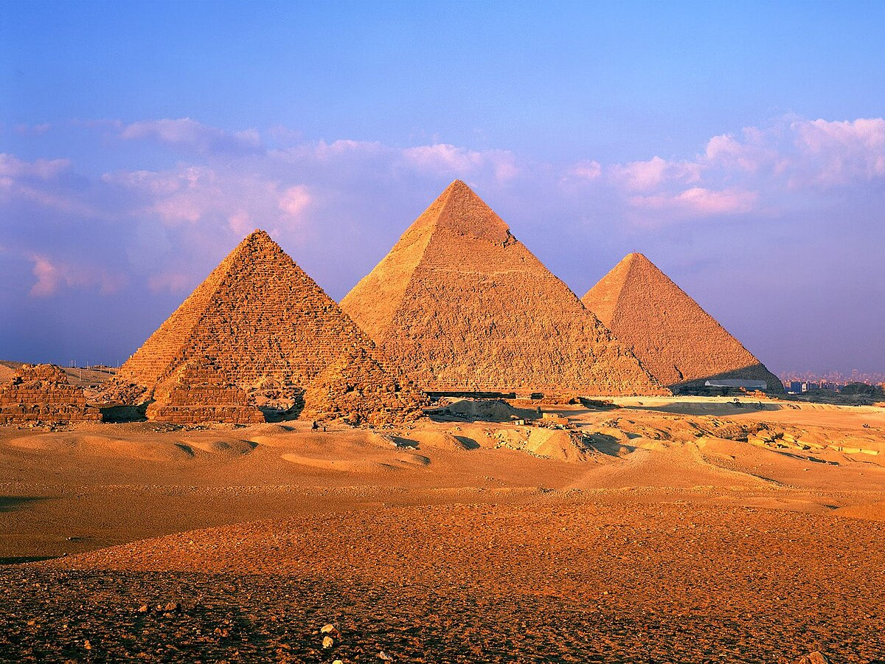

تميزت العمارة المصرية القديمة بالدقة، الضخامة، والاستمرارية، فبقيت آلاف السنين شاهدة على عبقرية المصري القديم.

دور ديني، تتكون من الفناء، القاعة، وقدس الأقداس. أمثلة: معبد الكرنك، معبد الأقصر.

تعبر عن عقيدة البعث، أنواعها: مصاطب، أهرامات، مقابر وادي الملوك.

أعجوبة هندسية: بناء هرم خوفو، نقل الحجارة، الدقة الرياضية.

السكن الملكي، زخارف داخلية جميلة، أدوات الأثاث الملكية.

تماثيل الملوك والآلهة، مثال: أبو الهول. أسلوب الفن: هدوء، ثبات، كمالية.

الرسومات داخل المعابد والمقابر، ألوان ثابتة، تحكي حياة المصري القديم.

الأعمدة: بردية، لوتسية، نخيلية. الرموز: عنخ، الجعران، عين حورس.

تمائم مثل الجعران، وأقنعة مثل توت عنخ آمون.
العمارة المصرية القديمة ليست مجرد حجارة، بل علم وإيمان وفن. إنها مصدر إلهام للعمارة الحديثة.